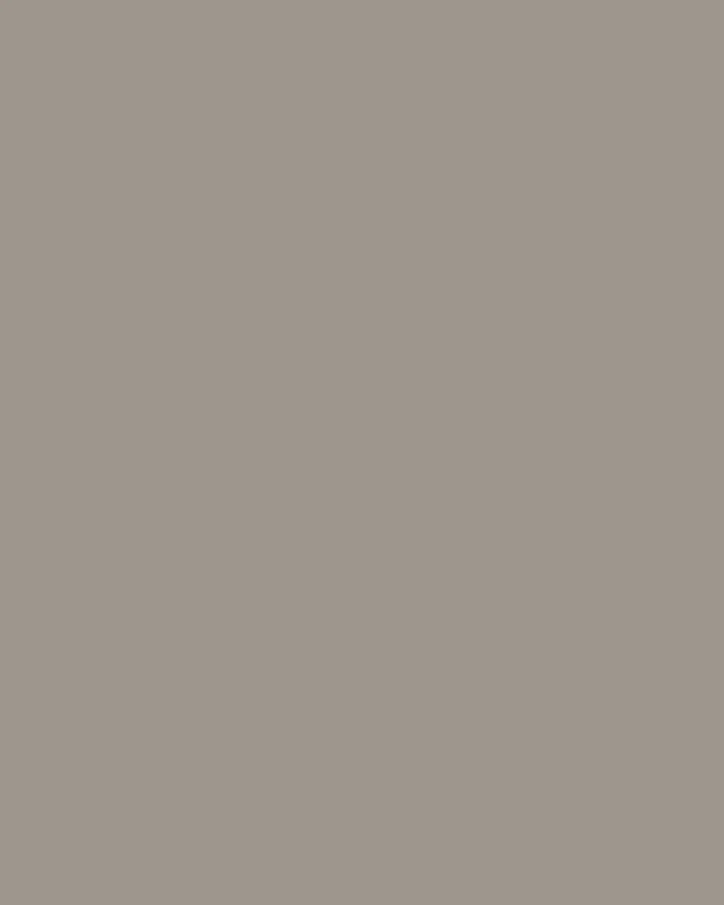
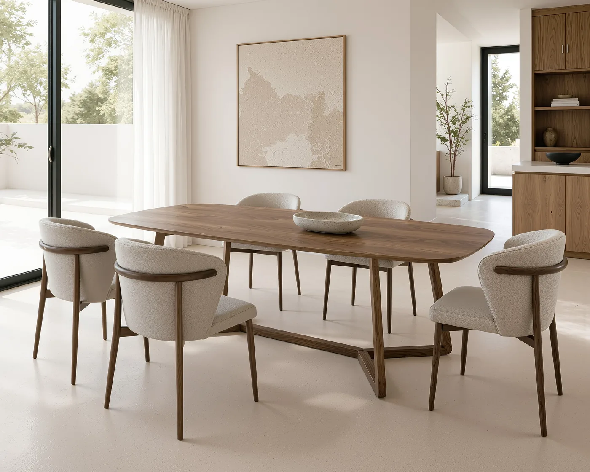
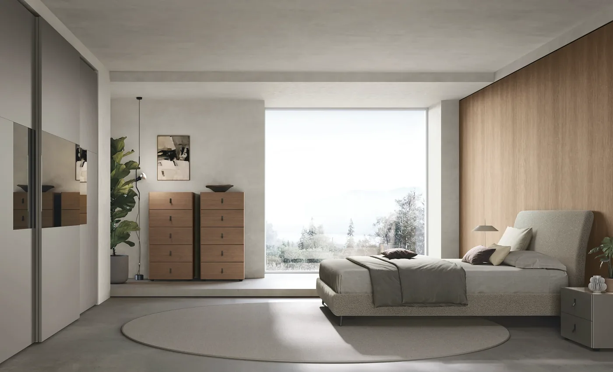
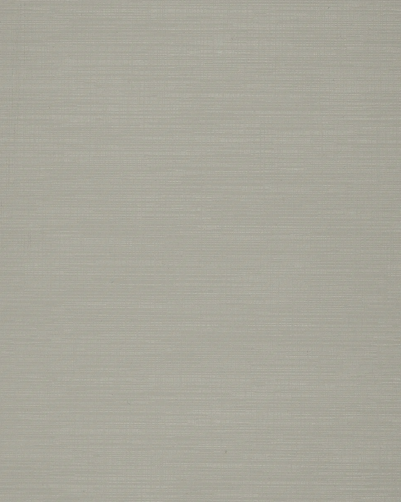

Tendances
Beige, pierre veinée et bois.
Chaque saison apporte ses teintes ; nous retenons celles qui durent.
- Les grandes surfaces dans des tons qui ne se démodent pas
- La tendance sur ce qui se remplace vite
- Les échantillons au magasin
Ce qui revient cette saison
Trois familles de teintes.
-

Les beiges
Sable, lin, écru, grège
Ici, une laque mate Arena. Le beige offre une base facile à associer ; sa nuance change avec le sol et la lumière.
-

Les pierres veinées
Travertin, piasentina
Le travertin pour les tons clairs (ci-contre, une céramique effet travertin sur une table Cattelan Napoleon), la piasentina pour les tons sombres. Réservez-les aux surfaces où vous souhaitez créer un contraste, comme un plateau ou une table basse.
-

Les bois chaleureux
Noyer ambré, chêne cognac, cannelures
Le bois apporte des nuances chaudes et s’associe facilement aux autres matières.


Pièce par pièce
Où placer la tendance, pièce par pièce.
-

Le salon
Le canapé neutre, le reste qui bouge
La base, pour longtemps. Le canapé dans un ton neutre, un tissu qui se nettoie : il ne doit rien à la saison. La tendance, en petit. Un fauteuil dans un ton chaud, un tapis, une table basse en pierre.
Voir les salons -

La salle à manger
La table qui dure, les chaises à la mode
La base, pour longtemps. La table, en bois massif ou plaqué, dans une essence de bois naturelle. La tendance, en petit. Les chaises et la lumière, qui donnent son époque à une salle à manger.
Voir la salle à manger -

Le dressing et la chambre
Des façades sobres, un intérieur qui change
La base, pour longtemps. Les façades dans un ton sobre, assorti au sol et aux portes. C’est l’aménagement intérieur qui fait la différence au quotidien. La tendance, en petit. L’intérieur, les poignées, l’éclairage des penderies : démontables.
Voir la chambre

Matières et finitions
Comparez les échantillons côte à côte.
Une teinte change selon votre sol et votre lumière. Apportez une photo de la pièce : les échantillons sont au magasin.
Mon projet01Noyer ambré 
02Chêne cannelé 03Laque mate 
04Lin texturé

Venez composer votre palette.
Au magasin, à Leval-Trahegnies, du lundi au samedi. Sans rendez-vous.
- Lundi
- 13h30 – 18h30
- Mardi au samedi
- 10h30 – 18h30
- Dimanche
- Fermé
- Téléphone
- 064 46 07 72
- Livraison
- Par nos soins, dans le Hainaut (Binche, La Louvière, Mons, Charleroi…) et la province de Namur
Ailleurs en Belgique, dont Bruxelles : sur demande.